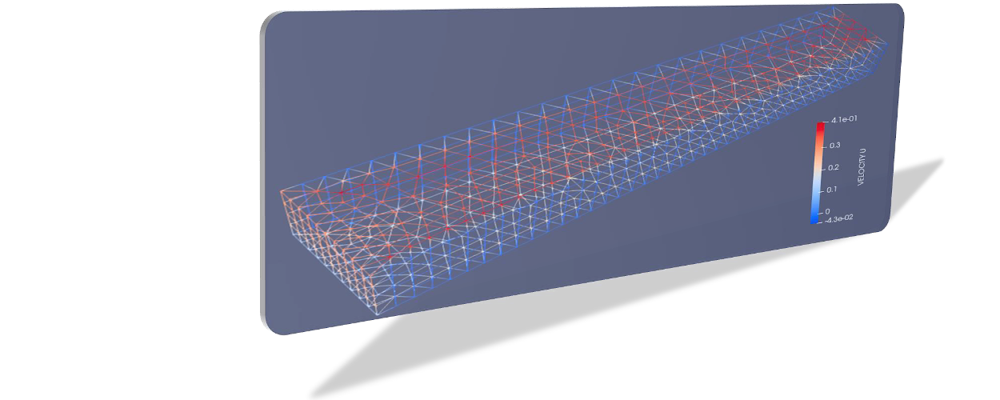

Steady 3d (MED and Salome)¶
This tutorial describes setting up and running a simple three-dimensional (3d) model of a flume based on the MED file library provided by salome-platform.org. The explanations build on the telemac3d user manual (v8p1) and more documentation can be found on opentelemac.org/doku.
Requirements
This tutorial is designed for advanced beginners and the case featured in this tutorial was established on Debian Linux (buster) with:
SALOME 9.6.0, and
TELEMAC v8p2r0 (stand-alone installation).
Download supplemental tutorial materials
All files created in this tutorial can be downloaded here (zip-download or clone the repository).
To explore example cases of Telemac3d, check out the TELEMAC installation folder, for instance, /telemac/v8p2/examples/telemac3d/.
SALOME-HYDRO¶
With SALOME-HYDRO being installed in a directory called /home/salome-hydro/appli_V2_2/ (adapt according to the installation directory and version of SALOME-HYDRO), launch SALOME-HYDRO (give it a moment to start up):
/home/salome-hydro/appli_V2_2/salome
Detailed installtion instructions
Read more about the installation, requirements, and launching (starting) SALOME-HYDRO in the TELEMAC installation chapter.
HYDRO Module¶
Create Contours (Polyline)¶
After starting SALOME-HYDRO, activate the HYDRO module, then find the Object Browser on the right side of the window and the POLYLINE folder symbol (Fig. 89).
Fig. 89 The empty viewport (OCC scene) of the HYDRO module.¶
Right-click on the POLYLINE folder, select Create polyline and a popup window will open. In the popup window:
For Name enter:
ContourClick on the Insert new section button (Fig. 90)
Define a new Polyline section (Fig. 91):
For Name enter:
Section_1For Type select Polyline
Ensure that the Closed box is checked
Press Add
Fig. 91 Add Polyline element.¶
Click on the Addition mode button (Fig. 92) to draw a polygon: Start with the first point in the upper left corner and move in clock-wise direction to draw the other three points.
Fig. 92 Enable the Addition mode.¶
The polygon should show up in the viewport as shown below (qualitative match with Fig. 93 is sufficient, but the drawing direction shown in Fig. 94)
Fig. 93 The final sketch of the Polyline.¶
Fig. 94 The drawing direction of the Polyline.¶
Press Apply and close
In the viewport, right-click on the polyline > Edit polyline (Fig. 95) and select Modification mode.
Fig. 95 The Edit polyline menu.¶
In the popup window, modify the points so that a 500-m long and 100-m wide rectangle occurs as illustrated in Fig. 96 (the section Index numbers will change, so pay attention to not create crossing lines).
Fig. 96 Edit the X and the Y coordinates of the polylines.¶
To get the data table (Section / Index) visible in the lower part of the popup window, highlight the four edges of the polygon in the viewport with the mouse. Figure 97 shows the finally edited polyline that now forms a rectangle.
Fig. 97 The finalized polyline.¶
Save the project
Save the project by clicking on the File (top menu) > Save As… (Fig. 98). In the popup window (Fig. 99), select the simulation target folder and define a name such as flume3d. Press Save to save the project in HDF format and regularly press the save button (disk symbol) in the next steps to avoid losing work. Thus, the project can be saved, closed, and re-opened any time.
Fig. 99 Navigate to a target directory and save the project.¶
Create Natural Object¶
From the HYDRO top menu, select Create immersible zone (Fig. 100) to define a wetted area for the later created mesh.
In the popup window (Fig. 101), make the following settings:
Name:
wetted_contourPolyline: Select the previously created
Contourrectangle (double-click in the field).Bathymetry: Leave empty.
Fig. 101 Define the Create immersible zone.¶
Press Apply and close.
Bottom elevations
A bathymetry file assigns bottom elevations to the geometry and can either be directly added in the HYDRO module or later with the STBTEL software that comes along with TELEMAC. Not providing a bathymetry file like in this tutorial will set the bottom level to zero.
Create Calculation Case¶
One or more calculation cases can be created to define elements for the later simulation. Here, define one calculation case, by clicking on the HYDRO top-menu > Create calculation case. A popup window opens and guides through setting up the calculation case.
Step 1 (Fig. 102): Define the framework:
Name:
HydrodynamicLimits:
ContourMode: Select Manual.
Highlight
wetted_contourandContourin the Objects frame and press Include >> to add it to the list of Included objects.Press Next > (button at the bottom)
Fig. 102 Create a calculation case.¶
Step 2 (Fig. 103): Include >> wetted_contour_Outerand press Next >.
Fig. 103 Include the polyline as wetted contour line.¶
Step 3 (Fig. 104): Leave the boundary polygons window as-is and just click Next >
Fig. 104 The empty boundary polygon window (leave as-is).¶
Step 4 (Fig. 105): Omit the definition of a Strickler [Str23] table and press Next >.
Fig. 105 Skip the definition of a Strickler table, which may be useful to define zones with different roughness attributes.¶
Step 5 (Fig. 106): Finalize the calculation case creation by clicking on the Finish button.
Fig. 106 Finalize the calculation case.¶
Export the calculation case by right-clicking on the Hydrodynamic calculation case in the Object Browser, then Export calculation case (Fig. 107). As a result, a Geometry entry becomes visible in the Object Browser.
Fig. 107 Export the calculation case.¶
Save the project
Save the project by clicking on the disk symbol.
GEOMETRY Module¶
This section guides through the creation of a rectangular geometry surface representing a flume and its boundaries defined with edges (lines). To get ready, activate the Geometry module, right-click on HYDRO_Hydrodynamic_1, and select Show Only (Fig. 108).
Fig. 108 The Geometry module in the Object Browser.¶
The Surface group in earlier versions of SALOME-HYDRO
Earlier versions of SALOME-HYDRO will also require to create a surface group, which already exists in this case with Hydrodynamic_Reg_1.
Right-click on HYDRO_Hydrodynamic_1 and select Create Group from the context menu. The four boundary edges of the surface will represent an upstream (inflow), a downstream (outflow), a left wall, and a right wall of the flume. To create the four boundary edges repeat the following steps for every edge (Fig. 109):
Shape Type (radio buttons in the upper part): select Edge (line symbol)
Name:
upstream(thendownstream,leftwall, andrightwall)Main Shape: select
HYDRO_Hydrodynamic_1Click on Show all sub-shapes > Select line in the viewport. In the white frame of the Create Group window, make sure to select the good edge only. Add the correct edge and Remove all others.
Fig. 109 Define the upstream edge of the surface.¶
For defining the other edges (
downstream,leftwall, andrightwall), use the indications in Fig. 110.
Fig. 110 Boundaries of the rectangular flume.¶
Click Apply to create the edge boundary and proceed with the next. After the last (fourth) edge, click Apply and Close.
Ultimately, the Geometry block in the Object Browser should look as shown in Fig. 111.
Fig. 111 The created groups in the object browser.¶
Mesh Module¶
To work with the geometry in a numerical model, the geometry needs to be defined as a triangular computational mesh that Telemac3d will extrapolate to a tetrahedral mesh. The Mesh module in SALOME-HYDRO enables the creation of a mesh with just a view clicks. The mesh is generated first for the surface (2d), then for every boundary edge (1d), and eventually computed and verified. To get ready, activate the Mesh module from the top menu.
Two-dimensional (2d) Mesh of the Flume¶
Highlight HYDRO_Hydrodynamic_1 in the Object Browser. Then, go to the Mesh top menu (do not confuse with the Mesh module), and select Create Mesh (Fig. 112).
In the Create mesh popup window set the following:
Name:
Mesh_Hn_1Geometry:
HYDRO_Hydrodynamic_1Leave the Mesh type as Any
In the 2D tab:
Choose Netgen 1D-2D for Algorithm
Find the cogwheel symbol behind the Hypothesis field and click on it to construct hypotheses for Netgen 2D Parameters.
In the Hypothesis Construction popup window (Fig. 113):
Define Name as
NETGEN 2D Parameters 10_30Set Max. Size to
30Set Min. Size to
10Set Fineness to Very Fine,
Leave all other field’s default values and click OK.
Back in the Create mesh window (Fig. 114), set the just created NETGEN 2D Parameters 10_30 as Hypothesis.
Click on Apply and Close (Create mesh popup window)
Fig. 113 Construct NETGEN 2D Hypothesis.¶
Fig. 114 The Create Mesh menu with define hypothesis.¶
One-dimensional (1d) Meshes of Boundary Edges¶
The 1d meshes of the boundary edges will represent sub-meshes of the 2d mesh. To create the sub-meshes, highlight the previously created Mesh_Hn_1 in the Object Browser (click on it), then go to the Mesh top menu and select Create Sub-Mesh (Fig. 115).
In the Create sub-mesh popup window, start with creating the upstream boundary edge’s mesh:
Name:
upstreamMesh:
Mesh_Hn_1Leave the Mesh type as Any
In the 1D tab:
Choose
Wire Discretisationfor AlgorithmFind the cogwheel symbol behind the Hypothesis field and click on it to construct hypotheses for Number of Segments.
In the Hypothesis Construction popup window (Fig. 116):
Define Name as
Segments_10Set Number of Segments to
10Set Type of distribution to
Equidistant distribution.
Back in the Create Mesh window (Fig. 117), set the just created Segments10 as Hypothesis.
Click on Apply in the Create sub-mesh popup window, which will remain open for the definition of the three other boundary edge’s meshes.
Fig. 116 Construct Segment hypothesis.¶
Fig. 117 Assign a wire discretisation to the submesh.¶
Repeat the above steps for creating sub-meshes for the downstream, left wall, and right wall edges, but with different construction hypotheses.
For the downstream sub-mesh use Name
downstreamand construct the following hypothesis (Fig. 118):Type: Number of Segments
Define Name as
Segments_05Set Number of Segments to
5Set Type of distribution to
Equidistant distribution.
For the left wall sub-mesh (Fig. 119) use Name
leftwalland construct the following hypothesis:Type: Arithmetic Progression 1D
Define Name as
Arithmetic1d10_30Set Start length to
10Set End length to
30.
Fig. 118 Construct an Arithmetic hypothesis.¶
Fig. 119 Assign the wire discretisation algorithm and the arithmetic hypothesis.¶
For the right wall sub-mesh use Name
rightwalland construct the following hypothesis:Type: Arithmetic Progression 1D
Define Name as
Arithmetic1d15_10Set Start length to
15Set End length to
10.
To this end, the Object Browser should include the 5 hypotheses and the non-computed meshes (warning triangles in the below figure indicating the Compute menu).
Save the project
Save the project by clicking on the disk symbol.
If a Define Order warning pops up…
If info or warning windows pops up and asks for defining the order to apply, that means the geometry groups contain too many elements. In this case, go back to the geometry creation and make sure that always only one element is added per group. For more complex models, the order of mesh hypotheses may not be an error, but in this simple case it must not appear being an issue.
Compute Mesh¶
In the Object Browser, extend (un-collapse) the new Mesh block, right-click on Mesh_Hn_1, and select Compute (Fig. 120).
This will automatically also compute all sub-meshes. After the successful computation of the mesh, SALOME-HYDRO informs about the mesh properties in a popup window (Fig. 121).
Fig. 121 Illustration of a successful mesh computation (numbers of elements, nodes, edges, faces, and volumes may slightly vary).¶
In the viewport (VTK scene tab in Fig. 122), find the -OZ button to switch to plane view. If the mesh is not visible even though the computation was successful, right-click on the mesh in the Object Browser and click on Show.
Fig. 122 The computed mesh in the VTK scene viewport.¶
Verify Mesh¶
Orientation of faces and volumes
This step will ensure that the mesh is correctly oriented for the simulation with Telemac3d. In the Object Browser, highlight Mesh_Hn_1 and then go to the Modification top menu > Orientation. In the popup window (Fig. 123), check the Apply to all box. Click the Apply and close button. The mesh should have changed from darker blue to a lighter tone of blue (if the inverse is the case, repeat the application of the orientation tool).
Fig. 123 The Modification of orientation window.¶
Identify and reconcile over-constraint elements
In the Object Browser, highlight Mesh_Hn_1. Then go to the Controls top menu > Face Controls > Over-constraint faces. Over-constrained triangles in the Mesh_Hn_1 will turn red in the viewport (VTK scene:1) and at the bottom of the viewport, the note Over-constrained faces: 3 will appear (Fig. 124).
Fig. 124 Overconstrained faces (red elements) highlighted in the viewport.¶
To reconcile the edge cause the triangle’s over-constrain, go to the Modification top menu > Diagonal inversion (Fig. 125), and select the internal edge of the concerned triangles.
Fig. 125 Define edges between neighboring triangles to reconcile by diagonal inversion.¶
Over-constrained triangles might be hidden by the axes arrows in the corner. Thus, pay attention to sufficiently zoom into the corner (Fig. 126) unless the Over-constrained faces notification in the viewport shows 0.
Fig. 126 Zoom into the axis corners to view slightly hidden triangles for diagonal inversion.¶
Save the project
Save the project by clicking on the disk symbol.
Export MED File¶
Exporting the mesh to a MED file requires the definition of mesh groups. To do so, highlight Mesh_Hn_1 in the object browser and right-click on it. Select Create Groups from Geometry from the mesh context menu (Fig. 127).
In the popup window, select all groups and sub shapes of the FLUME geometry and all groups of mesh elements and mesh nodes. For selecting multiple geometries, hold down the CTRL (Strg) and Shift keys on the keyboard and select the geometry/mesh groups. The tool will automatically add all nodes selected (Fig. 128). Press Apply and close to finalize the creation of groups.
Fig. 128 Select geometry elements to create groups.¶
Verify the created groups by right-clicking on the top of the project tree in the Object Browser and selecting Show only with the option Auto Color (Fig. 129).
Fig. 129 Make sure that the Mesh in the object browser contains Groups of Nodes, Edges, and Faces.¶
Unique elements only
Make sure that every group element is unique within every group. If an element appears twice in one group, the next step (export mesh) will through a warning message about double-defined group elements, which will lead to an error later.
If the groups seems correct (see above figure), export them with File (top menu) > Export > MED (Fig. 130).
In the Export mesh popup window (Fig. 131), define:
File name
Mesh_Hn_1(or whatever you prefer)Files of type
MED 4.1 files
Note: The installation of TELEMAC described in the TELEMAC installation chapter requires to useMED 3.2 files.Choose a convenient directory (Quick path) for saving the MED file
Leave all other default settings.
Click on Save to save the MED file.
Fig. 131 The Export mesh popup window.¶
Save the project
Save the project by clicking on the disk symbol.
Boundary Conditions¶
Basic Setup with the HydroSolver Module¶
Activate the HydroSolver module from the top menu and click on the Edit boundary conditions file button to create a new boundary condition file (Fig. 132).
In the opening popup window, select the just exported MED file containing the mesh and leave the Boundary conditions file field in the Input files frame free. In the Output files frame, click on … and define a boundary conditions file (e.g., flume3d_bc.bnd).
Put all files in 1 folder
Make sure that all model files (MED, BND, and others such as the later defined *.cas file) are all located in the same folder.
Make the following definitions in the Boundary conditions frame (Fig. 133):
Group Hydrodynamic_wetted_contour_Outer: Set Preset to Custom and all values to
0Group downstream: Set Preset to Prescribed H / free T
Group leftwall: Set Preset to Closed boundaries/walls
Group rightwall: Set Preset to Closed boundaries/walls
Group upstream: Set Preset to Prescribed Q / free T
Fig. 133 Define wall and liquid boundary conditions in the BND file.¶
Then click on Apply and Close.
Modify the Boundary File¶
The boundary file created with the HydroSolver involves a couple of issues that need to be resolved to enable TELEMAC assigning the correct boundary conditions. For this purpose, open the boundary condition file in a text editor (e.g., on Xfce desktop use right-click > mousepad) and make the following adaptations.
Only 4 edge boundaries are needed:
Set the single number in the first line to
4Remove the entire line (2) describing Group Hydrodynamic_wetted_contour_Outer
To enable the coherent use of flow rates for liquid boundaries, make sure that:
Line 2 defines
LIHBORwith5(prescribed depth),LIUBORandLIVBORwith4(free velocity), andLITBORwith4(free tracer) for the downstream boundary edge.Line 3 defines
LIHBORwith4(free depth),LIUBORandLIVBORwith5(prescribed flow rate), andLITBORwith4(free tracer) for the upstream boundary edge. Note that the line needs to be copied from the bottom to the top when using the bnd file created with the HydroSolver module.
Assign wall friction (i.e., zero velocities) to the left and right wall edges:
In Line 4, set
LIUBORandLIVBORto0(zero U and V velocities, respectively) for the leftwall boundary edge.In Line 5, set
LIUBORandLIVBORto0(zero U and V velocities, respectively) for the rightwall boundary edge.
The boundary file should now resemble the block below (can also be downloaded here). Save and close the *.bnd file. The below-shown box also shows how the boundary file should look like.
4
5 4 4 4 downstream
4 5 5 4 upstream
2 0 0 2 leftwall
2 0 0 2 rightwall
Boundary condition files for SLF geometries
SLF geometry files require more complex (node-wise) definitions of boundaries, which need to be setup with Blue Kenue and Fudaa-PrePro.
Simulation Steering Case File (CAS)¶
The steering (*.cas) file is the control (or steering) file for any TELEMAC simulation and links all model parameters. This section guides through setting up a simple *.cas file for Telemac3d simulations either manually based on a template or with the HydroSolver module in SALOME-HYDRO. Because of program instabilities and incoherent linking of file names (directories) in SALOME-HYDRO, it is recommended to work with the manual CAS file setup (or with Fudaa PrePro).
Tip
Copy a sample case from the TELEMAC folder (/telemac/v8p2/examples/telemac3d/) and edit it for convenience.
Windows
The *.cas file can also be edited/created with Fudaa PrePro) - or any text editor software - for use with Salome-Hydro on a Linux system later.
Overview: Manual CAS File Setup (Recommended)¶
The following *.cas template uses the following input files:
The boundary condition file named
flume3d_bc.bnd(see boundary file section)The geometry MED file
Mesh_Hn_1.med(see med file export section)Do not include any directory names (file paths) and make sure that all model files are in the same folder.
The *.cas file defines a steady, hydrodynamic model with an inflow rate of 50 m\(^3\)/s (prescribed upstream flow rate boundary) and an outflow depth of 2 m (prescribed downstream elevation). The simulation uses 5 vertical layers that constitute a numerical grid of prisms. 3d outputs of U (x-direction), V (y-direction), and W (z-direction) velocities, as well as the elevation Z, are written to a file named r3d_canal-t3d.med. 2d outputs of depth-averaged U velocity (x-direction), depth-averaged V velocity (y-direction), and water depth h are written to a file named r2d3d_canal-t3d.med.
The below code block shows the steering file t3d_flume.cas and details for every parameter are provided after the code block. The slash / character comments out lines (i.e., TELEMAC will ignore anything in a line the / character). The : character separates VARIABLE NAME and VALUEs. Alternatively to the :, also a = sign may be used. The &ETA at the end of the file makes TELEMAC printing out a list of keywords applied (in the DAMOCLES routine).
Tip
To facilitate setting up the steering (CAS) file for this tutorial, download the template (right-click on the link > Save Link As… > navigate to the local tutorial folder), which contains more descriptions and options for simulation parameters.
/ t3d_flume.cas
/------------------------------------------------------------------/
/ COMPUTATION ENVIRONMENT
/------------------------------------------------------------------/
TITLE : 'TELEMAC 3D FLUME'
MASS-BALANCE : YES
/
BOUNDARY CONDITIONS FILE : flume3d_bc.bnd
GEOMETRY FILE : Mesh_Hn_1.med
GEOMETRY FILE FORMAT : 'MED'
3D RESULT FILE : r3d_canal-t3d.med
3D RESULT FILE FORMAT : 'MED'
2D RESULT FILE : r2d3d_canal-t3d.med
2D RESULT FILE FORMAT : 'MED'
/
VARIABLES FOR 2D GRAPHIC PRINTOUTS : U,V,H
VARIABLES FOR 3D GRAPHIC PRINTOUTS : Z,U,V,W
/
/------------------------------------------------------------------/
/ GENERAL PARAMETERS
/------------------------------------------------------------------/
TIME STEP : 1.
NUMBER OF TIME STEPS : 5000
GRAPHIC PRINTOUT PERIOD : 100
LISTING PRINTOUT PERIOD : 100
/
/------------------------------------------------------------------/
/ VERTICAL
/------------------------------------------------------------------/
/ vertical cell height defined by initial condition x no. of levels
/ default and minimum is 2, upward vertical direction
NUMBER OF HORIZONTAL LEVELS : 5
/
/------------------------------------------------------------------/
/ NUMERICAL PARAMETERS
/------------------------------------------------------------------/
/
/ ADVECTION-DIFFUSION
/------------------------------------------------------------------
SCHEME FOR ADVECTION OF VELOCITIES : 5
SCHEME FOR ADVECTION OF K-EPSILON : 5
SCHEME FOR ADVECTION OF TRACERS : 5
/ scheme options - use 2 for disabling tidal flats and increase speed
SCHEME OPTION FOR ADVECTION OF VELOCITIES : 4
SCHEME OPTION FOR ADVECTION OF K-EPSILON : 4
SCHEME OPTION FOR ADVECTION OF TRACERS : 4
/
SUPG OPTION : 2;2;2;2 / classic supg for U and V see docs sec 6.2.2
/
/ PROPAGATION HEIGHT AND STABILITY
/ ------------------------------------------------------------------
IMPLICITATION FOR DEPTH : 0.55 / should be between 0.55 and 0.6
IMPLICITATION FOR VELOCITIES : 0.55 / should be between 0.55 and 0.6
IMPLICITATION FOR DIFFUSION : 1.
FREE SURFACE GRADIENT COMPATIBILITY : 0.1 / default 1.
/
/------------------------------------------------------------------/
/ HYDRODYNAMICS
/------------------------------------------------------------------/
/
/ HYDRODYNAMIC SOLVER
/------------------------------------------------------------------
NON-HYDROSTATIC VERSION : YES / use default solver number 7 (GMRES)
MAXIMUM NUMBER OF ITERATIONS FOR DIFFUSION OF VELOCITIES : 100 / default is 60
/
/ BOUNDARY CONDITIONS
/------------------------------------------------------------------
/ Use Nikuradse roughness law - all others are not 3D compatible
LAW OF BOTTOM FRICTION : 5
LAW OF FRICTION ON LATERAL BOUNDARIES : 5 / for natural banks - 0 for symmetry
FRICTION COEFFICIENT FOR THE BOTTOM : 0.1 / 3 times d90 according to van Rijn
/
/ Liquid boundaries
PRESCRIBED FLOWRATES : 50.;50.
PRESCRIBED ELEVATIONS : 2.;0.
/
/ INITIAL CONDITIONS
/ ------------------------------------------------------------------
INITIAL CONDITIONS : 'CONSTANT ELEVATION'
INITIAL ELEVATION : 50 / corresponds to depth here - not so in the boundary file
INITIAL GUESS FOR DEPTH : 1 / INTEGER for speeding up calculations
/
/ Type of velocity profile can be 0-user defined) 1-constant (default), 2-Log
VELOCITY PROFILE : 1 / horizontal profile
VELOCITY VERTICAL PROFILES : 2;2
/
/------------------------------------------------------------------/
/ TURBULENCE
/------------------------------------------------------------------/
/ in 3d use 3-k-epsilon model, alternatively 5-Spalart-Allmaras or 4-Smagorinsky for highly non-linear flow
HORIZONTAL TURBULENCE MODEL : 3
VERTICAL TURBULENCE MODEL : 3
/
&ETA
Computation Environment¶
The computation environment defines a Title (e.g., TELEMAC 3D FLUME). The most important parameters involve the input files:
GEOMETRY FILE:Mesh_Hn_1.med- alternatively, select a serafin (SLF) geometry fileGeometry file format:MED- omit this parameter when use a SLF geometry fileBoundary conditions file:flume3d_bc.bnd- with a SLF file, use a CLI boundary file
The output can be defined with the following keywords:
3D RESULT FILE:r3d_canal.med- can be either a MED file or a SLF file2D RESULT FILE:r2d3d_canal.med- can be either a MED file or a SLF file3D RESULT FILE FORMAT:'MED'- can be omitted when using SLF output files2D RESULT FILE FORMAT:'MED'- can be omitted when using SLF output filesVARIABLES FOR 3D GRAPHIC PRINTOUTS:Z,U,V,W- many more options can be found in section 3.12 of the Telemac3d manualVARIABLES FOR 2D GRAPHIC PRINTOUTS:U,V,H- many more options can be found in section 3.13 of the Telemac3d manual
In addition, the MASS-BALANCE : YES setting will printout the mass fluxes and errors in the computation region, which is an important parameter for verifying the plausibility of the model.
General Parameters¶
The General parameters specify time and location settings for the simulation:
Location can be used for geo-referencing of outputs (not to set in this tutorial).
Time:
TIME STEP:1.0defines the time step as a multiple of graphic/listing printout periods.
Use small enough and sufficient time steps to achieve/increase computational stability and increase to yield computational efficiency.NUMBER OF TIME STEPS:5000defines the overall simulation length.
Limit the number of time steps to a minimum (e.g., until equilibrium conditions are reached in a steady simulation).GRAPHIC PRINTOUT PERIOD:100time step at which graphic variables are written (in this example5000/ (100·1.0) = 50 graphic printouts will be produced, i.e., every100·1.0= 100 seconds)LISTING PRINTOUT PERIOD:100time step multiplier at which listing variables are printed (in this example, listings are printed every100·1= 100 seconds)
Modify the time parameters to examine the effect in the simulation later.
Attention
Graphic printouts, just like all other data printouts, are time consuming and will slow down the simulation.
Vertical (3d) Parameters¶
Telemac3d will add Horizontal levels (i.e., layers) that correspond to copies of the 2d-mesh to build a 3d-mesh of prisms (default) or tetrahedrons. These parameters can be defined with:
NUMBER OF HORIZONTAL LEVELS:5where the default and minimum is2and the horizontal levels point in upward vertical direction. The thickness of vertical layers results from the water depth, which can be user-defined through theINITIAL ELEVATIONparameter (see initial conditions).MESH TRANSFORMATION:1is the kind of level for the distribution (default is1, a homogenous sigma distribution). For unsteady simulations, set this value to2(or0- calcot) and implement aZSTARarray in a user Fortran file (USER_MESH_TRANSFORMsubroutine).ELEMENT:'PRISM'(default) and prisms can optionally split into tetrahedrons by settings this parameter to'TETRAHEDRON'(can potentially crash the simulation).
Tip
For unsteady simulations (time-variable inflow/outflow rates), pre-define the thickness of vertical layers with the ZSTAR parameter in a user Fortran file (subroutine) as described in section 4.1 of the Telemac3d manual.
To get started with writing subroutines (it is no magic neither), have a look at the bottom_bc example (~/telemac/v8p2/examples/telemac3d/bottom_bc/). In particular, examine the user fortran file /user_fortran-source/user_mesh_transf.f and its call in the steering file t3d_bottom_source.cas through the definition of the FORTRAN FILE keyword and setting of MESH TRANSFORMATION : 2.
Numerical Parameters¶
This section defines internal numerical parameters for the Advection and Diffusion solvers, which are also sometimes listed in the hydrodynamic parameters section in the Telemac3d manual.
In Telemac3d, it is recommended to use the so-called distributive predictor-corrector (PSI) scheme (read more at the BAW’s hydraulic engineering repository) with local implication for tidal flats (for velocity, tracers, and k-epsilon):
Set the PSI scheme:
SCHEME FOR ADVECTION OF VELOCITIES:5SCHEME FOR ADVECTION OF K-EPSILON:5SCHEME FOR ADVECTION OF TRACERS:5
Enable predictor-corrector with local implication:
SCHEME OPTION FOR ADVECTION OF VELOCITIES:4SCHEME OPTION FOR ADVECTION OF K-EPSILON:4SCHEME OPTION FOR ADVECTION OF TRACERS:4
These values (5 for the scheme and 4 for the scheme option) are default values since TELEMAC v8p1, but it still makes sense to define these parameters for enabling backward compatibility of the steering file. If the occurrence of tidal flats can be excluded (note that already a little backwater upstream of a barrier can represent a tidal flat), the SCHEME OPTIONS can generally set to 2 for speeding up the simulation.
Similar to Advection, the above keywords can be used to define Diffusion steps (replace ADVECTION with DIFFUSION in the keywords), where a value of 0 can be used to override the default value of 1 and disable diffusion.
The SUPG OPTION (Streamline Upwind Petrov Galerkin) keyword is a list of four integers that define if upwinding applies and what type of upwinding applies. The integers may take the following values:
0disables upwinding,1enables upwinding with a classical SUPG scheme (recommended when the CFL condition is unknown), and2enables upwinding with a modified SUPG scheme, where upwinding corresponds to the Courant number.
The default is SUPG OPTION : 1;0;1;1, where the first list element refers to flow velocity (default 1), the second to water depth (default 0), the third to tracers (default 1), and the last to the k-epsilon model (default 1). Read more in section 6.2.2 of the Telemac3d manual.
An additional option for speeding up is to enable mass lumping for diffusion, depth, and/or weak characteristics. Mass lumping results in faster convergence, but it introduces artificial dispersion in the results, which is why enabling mass lumping is discouraged by the TELEMAC developers. The provided t3d_template.cas includes the keywords for mass lumping, though they are disabled through the / at the beginning of the line.
Implication parameters (IMPLICITATION FOR DEPTH and IMPLICITATION FOR VELOCITIES) should be set between 0.55 and 0.60 (default is 0.55 since TELEMAC v8p1) and can be considered as a degree of implicitation. IMPLICITATION FOR DIFFUSION is set to 1.0 by default. Read more in section 6.4 of the Telemac3d manual.
The parameter FREE SURFACE GRADIENT can be used for increasing the stability of a model. Its default value is 1.0, but it can be reduced to 0.1 to achieve stability.
Hydrodynamic Parameters¶
In river analyses, the non-hydrostatic version of TELEMAC should be used through the following keyword: NON-HYDROSTATIC VERSION : YES.
Depending on the type of analysis, the solver-related parameters of SOLVER, SOLVER OPTIONS, MAXIMUM NUMBER OF ITERATION, ACCURACY, and PRECONDITIONING may be modified. The provided t3d_template.cas includes solver keywords and comments for modifications, but the default options already provide a coherent a stable setup. Read more about solver parameters in section 6.5 of the Telemac3d manual.
Parameters for Boundary Conditions enable the definition of roughness laws and properties of liquid boundaries.
With respect to roughness, TELEMAC developers recommend using the Nikuradse [Nik33] roughness law in 3d (number 5), because all others are not meaningful or not integrally implemented in the 3d version. To apply the Nikuradse [Nik33] roughness law to the bottom and the boundaries use:
LAW OF BOTTOM FRICTION:5LAW OF FRICTION ON LATERAL BOUNDARIES:5, which can well be applied to model natural banks, or set to0(no-slip) for symmetry.
*Note that the boundary conditions file sets theLIUBORandLIVBORfor theleftwallandrightwallboundary edges to zero, to enable friction.FRICTION COEFFICIENT FOR THE BOTTOM:0.1corresponds to 3 times a hypothetical d90 (grain diameter of which 90% of the surface grain mixture are finer) according to [vR19].FRICTION COEFFICIENT FOR LATERAL SOLID BOUNDARIES:0.1corresponds to 3 times a hypothetical d90, similar as for the bottom.
The liquid boundary definitions for PRESCRIBED FLOWRATES and PRESCRIBED ELEVATIONS correspond to the definitions of the downstream boundary edge in line 2 and the upstream boundary edge in line 3 (see boundary definitions section). From the boundary file, TELEMAC will understand the downstream boundary as edge number 1 (first list element) and the upstream boundary as edge number 2 (second list element). Hence:
The list parameter
PRESCRIBED FLOWRATES : 50.;50.assigns a flow rate of 50 m\(^3\)/s to the downstream and the upstream boundary edges.The list parameter
PRESCRIBED ELEVATIONS : 2.;0.assigns an elevation (i.e., water depth) of two m to the downstream boundary and a water depth of 0.0 m to the upstream boundary.
The 0. value for the water does physically not make sense at the upstream boundary, but because they do not make sense, and because the boundary file (flume3d_bc.bnd) only defines (prescribes) a flow rate (by setting LIUBOR and LIVBOR to 5), TELEMAC will ignore the zero-water depth at the upstream boundary.
Instead of a list in the steering *.cas file, the liquid boundary conditions can also be defined with a liquid boundary condition file in ASCII text format. For this purpose, a LIQUID BOUNDARIES FILE or a STAGE-DISCHARGE CURVES FILE (sections 4.3.8 and 4.3.10 in the Telemac3d manual, respectively can be defined. The t3d_template.cas steering file includes these keywords in the COMPUTATION ENVIRONMENT section, though they are disabled through the / character at the beginning of the line. A liquid boundary file (QSL) may look like this:
# t3d_canal.qsl
# time-dependent inflow upstream-discharge Q(2) and outflow downstream-depth SL(1)
T Q(2) SL(1)
s m3/s m
0. 0. 5.0
500. 100. 5.0
5000. 150. 5.0
Tip
The ELEVATION parameter in the *.cas file denotes water depth, while the ELEVATION keyword in an external liquid boundary file (e.g. stage-discharge curve) refers to absolute (geodetic) elevation (Z plus H).
With a prescribed flow rate, a horizontal and a vertical velocity profile can be prescribed for all liquid boundaries. With only a downstream and an upstream liquid boundary (in that order according to the above-defined boundary file), the velocity profile keywords are lists of two elements each, where the first entry refers to the downstream and the second element to upstream boundary edges:
VELOCITY PROFILES:1;1is the default option for the horizontal profiles. If set to2;2, the velocity profiles will be read from the boundary condition file.VELOCITY VERTICAL PROFILES:2;2sets the vertical velocity profiles to logarithmic. The default is1;1(constant). Alternatively, a user-definedUSER_VEL_PROF_Zsubroutine can be implemented in a Fortran file.
Read more about options for defining velocity profiles in section 4.3.12 of the Telemac3d manual.
The initial conditions describe the condition at the beginning of the simulation. This tutorial uses a constant elevation (corresponding to a constant water depth) of 2., and enables using an initial guess for the water depth to speed up the simulation:
INITIAL CONDITIONS:'CONSTANT ELEVATION'can alternatively be set to'CONSTANT DEPTH'INITIAL ELEVATION:50.corresponds to depth here, but would be different in an external liquid boundary file (see above).INITIAL DEPTH:2.is not used in this tutorial.INITIAL GUESS FOR DEPTH:1must be an integer value and speeds up the calculation (convergence).
Tip
In this scenario, INITIAL ELEVATION: 50 makes that the computational mesh is 50 m high, which makes sense in the context of a 100-m wide and 500-m long flume. However, this setting requires careful revision in other cases.
Read more about the initial conditions in section 4.2 of the Telemac3d manual.
Turbulence¶
The fundamental principles of turbulence and its application to the Navier-Stokes equations are explained in the steady Telemac2d tutorial. In 3d, TELEMAC developers recommend using either the \(k-\epsilon\) model (3) or the Spalart and Allmaras [SA92] model (5) in lieu of the mixing length model (2):
HORIZONTAL TURBULENCE MODEL:3VERTICAL TURBULENCE MODEL:3
If the VERTICAL TURBULENCE MODEL is set to 2 ('MIXING LENGTH'), a MIXING LENGTH MODEL can be assigned. The default is 1, which is preferable for strong tidal influences and a value of 3 sets the length for computing vertical diffusivity to Nezu and Nakagawa [NN93].
Read more about turbulence in TELEMAC in section 5.2 and the mixing length in section 5.2.2 of the Telemac3d manual.
HydroSolver CAS File Setup (Unstable)¶
Tip
Skip this section if you already set up the CAS file manually.
A *.cas file can be created with the HydroSolver module in SALOME-HYDRO as follows:
Go to the Hydro top menu > Edit cas file (English) and a popup window along with a new frame will open. The popup window will ask for the version of TELEMAC (i.e., the solver) to use. Select Telemac3d and clock Ok.
In the new frame (Eficas Telemac viewport), go to File > New for creating a new
*.cas(case or French cas).Save the new
*.casfile (e.g.,flume3d-steady.cas) in the same directory where all other simulation files live.
A new unnamed file1 case is created and opens up in the Computation environment frame. To make sure that no information will be lost, save the *.cas file regularly. The HydroSolver module guides through parameter definitions as above shown (starting with the COMPUTATION_ENVIRONMENT block), with built-in explanations on the sidebar.
Attention
After finalizing the *.cas file with HydroSolver, open the *.cas file in a text editor and make sure that all parameters are coherently defined as described above. In particular, pay attention to the non-use of file directories.
Run Simulation (Compute)¶
Stand-alone TELEMAC installation¶
Go to the configuration folder of the local TELEMAC installation (e.g., ~/telemac/v8p2/configs/) and launch the environment (e.g., pysource.openmpi.sh - use the same as for compiling TELEMAC).
cd ~/telemac/v8p2/configs
source pysource.openmpi.sh
With the TELEMAC environment loaded, change to the directory where the above-created 3d-flume simulation lives (e.g., /home/modelling/flume3d-tutorial/) and run the *.cas file by calling the telemac3d.py script.
cd ~/modelling/flume3d-tutorial/
telemac3d.py flume3d.cas
As a result, a successful computation should end with the following lines (or similar) in Terminal:
[...]
BOUNDARY FLUXES FOR WATER IN M3/S ( >0 : ENTERING )
FLUX BOUNDARY 1 : -49.85411
FLUX BOUNDARY 2 : 50.00000
--------------------------------------------------------------------------------
FINAL MASS BALANCE
T = 5000.0000
--- WATER ---
INITIAL MASS : 2500000.
FINAL MASS : 100343.0
MASS LEAVING THE DOMAIN (OR SOURCE) : 2384217.
MASS LOSS : 15440.06
END OF TIME LOOP
EXITING MPI
*************************************STOP 0
* END OF MEMORY ORGANIZATION: *
*************************************
CORRECT END OF RUN
ELAPSE TIME :
44 SECONDS
... merging separated result files
... handling result files
moving: r3d_canal-t3d.med
moving: r2d3d_canal-t3d.med
... deleting working dir
My work is done
Thus, Telemac3d produced the files r3d_canal-t3d.med and r2d3d_canal-t3d.med, which can now be analyzed in the post-processing with SALOME.
SALOME-HYDRO & HydroSolver¶
Warning
On newer systems (e.g., Debian 10), it is highly likely, that the local libraries are newer than the ones used for compiling TELEMAC in the SALOME-HYDRO environment. Thus, simulations may fail, for example when SALOME-HYDRO tries to communicate with the local openmpi libraries. For this reason, it is recommended to use a TELEMAC stand-alone installation for running simulations.
If the new PYTEL case is not showing up in the Object Browser, save the project (e.g., tetrahedral_3d.hdf), close, and restart SALOME-HYDRO. Re-open the project HDF file and re-activate the HydroSolver module.
In the Object Browser, click on tetrahedral_steering (highlights in blue).
With the steering file highlighted, find the Edit Pytel case for execution button in the menu bar and click on it.
Enable the PYTEL radio button
In the Object Browser, right-click on HydroSolver and click Refresh. An EXE sign next to tetrahedral steering should show up*.
Right-click on the new EXE tetrahedral steering item in the Object Browser, then click on Compute
Post-Processing with SALOME and ParaVis¶
Go to the installation folder where SALOME is installed (e.g., /home/SALOME-9.6.0/) and launch SALOME (recall the installation instructions for SALOME - different from SALOME-HYDRO).
cd ~/SALOME-9.6.0/
source env_launch.sh
./salome
Once SALOME opened up, activate the ParaVis module from the top menu.
Why SALOME and not SALOME-HYDRO?
In theory, also SALOME-HYDRO does the job, but the ParaVis module may run unstable here. Moreover, ParaView can handle similar data formats, but the default installation of ParaView cannot handle MED files. For these reasons, working with the latest official SALOME release is the best option to post-process MED files.
Both the 3d (r3d_canal-t3d.med) and 2d (r2d3d_canal-t3d.med) results files can be loaded the same way and data export works similarly. Thus, the following sections illustrate loading and extracting data from the 3d (r3d_canal-t3d.med) results file only.
Load Results (MED file)¶
To open a results (or any other) MED file, right-click on the builtin: symbol in the Pipeline Browser on the top-left of the window and select Open (Fig. 134).
Fig. 134 The Open entry in the context menu of the builtin: element in ParaVis’ Pipeline Browser.¶
In the popup window (Fig. 135), use the frames on the left to navigate to the folder where the simulation and its results live. Select r3d_canal-t3d.med and click OK.
Fig. 135 Select the results MED file in the Open File window.¶
The file r3d_canal-t3d.med appears in the Pipeline Browser (Fig. 136). Click on the green Apply button in the Properties tab.
Fig. 136 The results MED file in the Pipeline Browser and the Apply button.¶
The model block (i.e., the flume, or channel - French: canal) becomes visible in the viewport. Click on the block in the viewport (left mouse button), hold down and move the mouse to get an impression of the flume. To visualize the results, find the variable drop-down menu in the upper part of the window (initially shows Solid Color), and select VELOCITY U (Fig. 137).
Fig. 137 Load the VELOCITY U data in ParaVis.¶
Click on the Play > button (top-right of the window, indicated by the mouse cursor in Fig. 138) to animate the results illustration to the last time step (50 - which is the result of 5000 times steps divided by the graphical printout period of 100).
Fig. 138 The VELOCITY U parameter at the final time step plotted in the ParaView scene.¶
Set the visualization to Surface with Edges (instead of Surface), next to the VELOCITY U drop-down menu, and export the current visualization by click on the Capture screenshot … button in the viewport (Fig. 139).
Fig. 139 Make a screenshot of the ParaView scene showing the VELOCITY U visualization and the 3d mesh.¶
Export Data¶
To export data from a results file, go to File > *Save Data… (Fig. 140).
In the popup window (Fig. 141) define a file name and ending, which can be either CSV (including *.tsv) or txt. The selected ending will call the appropriate assistant to define export details. In this example, use CSV by typing flume3d-export.csv.
After clicking OK, the Configure Writer (CSVWriter) window (Fig. 142) opens. Select relevant data (e.g., U, V, W, and Z) by checking the Choose Arrays to Write box and enable Add Time. Click OK to finalize the data export.
Fig. 142 Configure the CSV Writer for exporting relevant data such as ELEVATION Z and 3d VELOCITY (U, V, and W).¶
Figure 143 shows an example for an exported CSV file.
Fig. 143 An example of an exported CSV file containing timesteps, elevation, point coordinates, and 3d velocities.¶
Recall that many other variables can be exported by defining them in the *.cas file as above described in the computational environment. A full list of 2d and 3d output parameters in available sections 3.13 and 3.12, respectively, of the Telemac3d docs.
Discover more ParaVis Filters
There is much more to discover in ParaVis. For instance, apply Filters (right-click on r3d_canal-t3d.med in the Pipeline Browser and go to Add Filter) to extract particular data at particular sections.